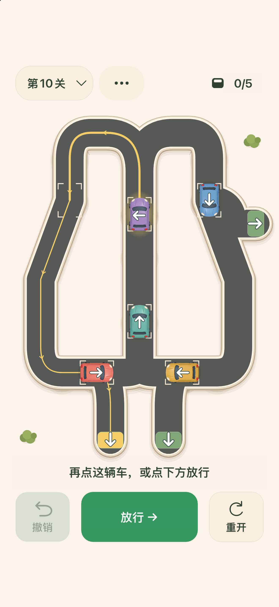

先看完整路线
点选小车，沿着黄线看一遍。它可能绕回来，也可能路过一个出口继续前行。
给思考，留一点空位
看清路线，安排顺序，留出刚刚好的空位。一款可以慢慢琢磨的单机逻辑解谜游戏，让每辆小车找到自己的出口。
即将登陆 App Store前12关免费体验，一次购买解锁额外48关。
轻轻一点，想好下一步。
01 / 找到通行的节奏
点选小车，沿着黄线看一遍。它可能绕回来，也可能路过一个出口继续前行。
只有队首能走。看好下一条车道的空位，决定谁先出发，谁再等一等。
走错了可以撤销，也可以重开这一关。没有计时，每个想法都来得及慢慢试。
02 / 一段小小的旅程
从简短的上手练习，到环路、共用车道和交叉路口。一点空位的变化，就可能带来不同的通行结果。
一次应用内购买，永久解锁当前第13—60关。无订阅，支持家庭共享，具体以Apple的共享设置为准。不承诺未来新增内容。
购买和恢复购买需要连接Apple服务。游玩进度不会在设备之间同步。
关于玩法、购买，或怎样继续上次的进度，都可以在这里找到帮助。